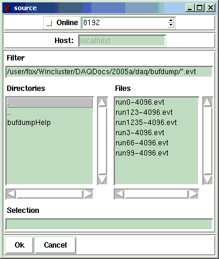

File->Open...
The File->Open dialog allows you to open a
data source from which
bufdump will read data buffers.
Clicking File->Open will bring up the data source
dialog shown below

As you can see, this dialog is divided into several vertical sections.
- The top section allows you to set the buffersize (the default of
8192 is the default buffersize used by the NSCL DAQ system),
and selecte between offline and online event sources.
- The second section from the top is disabled, unless the
Online box is checked. This section consists of a text
entry box in which you can enter the name of the system that
is producing data (e.g. spdaq20.nscl.msu.edu for S800 experiments).
- The third section from the top is only enabled if the
Online box is not checked. It allows you to navigate
the filesystem and select an event file. The top entry allows you to
specify a filter that describes which files you may choose from. The
left list box (labelled Diretories) presents the subdirectories in the
current directory as well as .. to go up one level in the file system.
the right listbox (labelled Files) presents a list of files you can click
to select. Finally, the text entry labelled Selection displays the full
path to the file you have currently selected.
- The bottom section provides buttons for actions you may take:
- Ok accepts the data source you have selected and
attempts to open it.
- Cancel dismisses the dialog without taking any action
Please report all errors to http://daqbugs.nscl.msu.edu